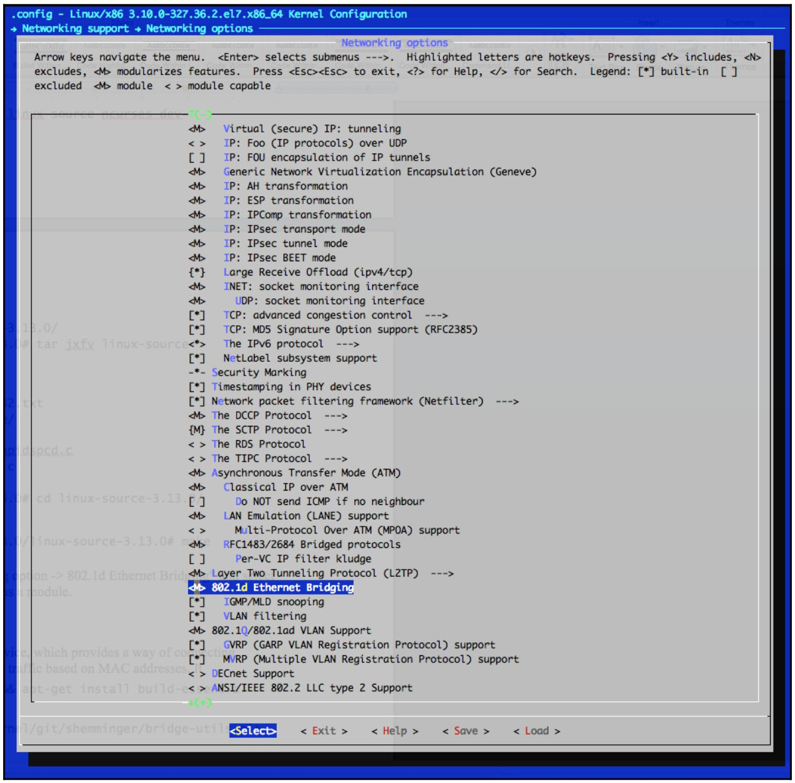
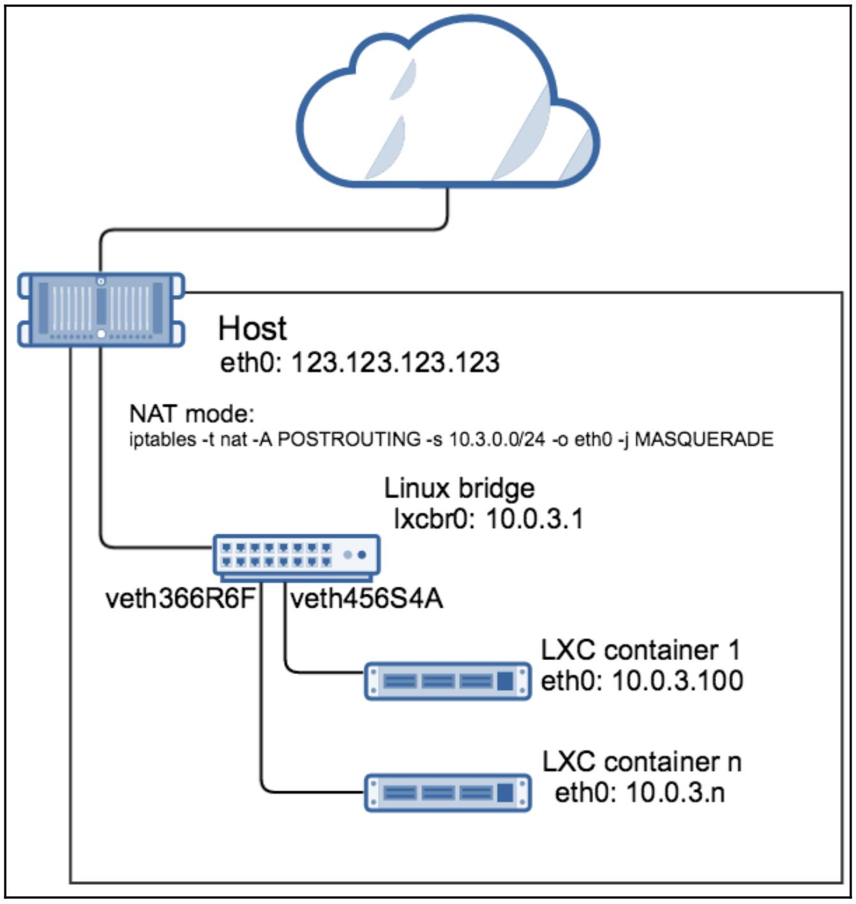
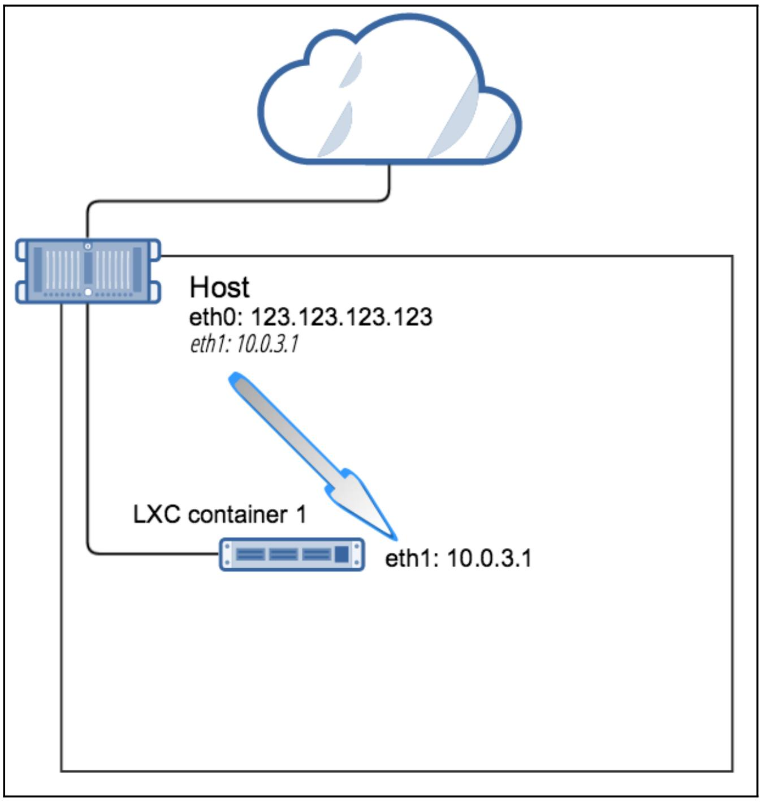

Глава 5. Построение сетей в LXC при помощи моста Linux и Open vSwitch
|
Предыдущий | Вверх | Следующий |
CloudComputing:mdl.ru Windows Server 2016 наизнанку Полное руководство Ceph ( )
Глава 5. Построение сетей в LXC при помощи моста Linux и Open vSwitch
Содержание
Глава 5. Построение сетей в LXC при помощи моста Linux и Open vSwitch
Построение мостов в Linux при помощи программного обеспечения
Мост Linux и пакет LXC в Ubuntu
Мост Linux и пакет LXC в CentOS
Применение службы dnsmasq для получения IP адреса в контейнере
Статичное назначение IP адресов в контейнере LXC
Обзор вариантов настройки сетевой среды LXC
Работа вручную с вашим мостом Linux
Настройка LXC с применением режима без сетевой среды
Настройка LXC с применением режима пустой сетевой среды
Настройка LXC с применением режима veth
Настройка LXC с применением режима phys
Настройка LXC с применением режима vlan
Настройка LXC с применением режима macvlan
Чтобы сделать доступной связь с вновь построенным контейнером нам необходим некий способ соединять имеющиеся интерфейсы виртуальной сети из сетевого пространства имён контейнера с самим хостом и предоставить маршрутизацию либо к другим контейнерам, либо к всемирному Интернету, если это необходимо. Linux предоставляет некий программный мост, который позволяет нам делать проводку между контейнерами LXC различными способами, как мы исследуем это в настоящей главе.
Имеется две распространённые реализации программного моста - тот мост, который предоставляет имеющийся пакет bridge-utils package и проект Open vSwitch. Это расширяет основную функциональность моста Linux ещё больше путём разделения плоскостей контроля и управления данного коммутатора, что делает возможным полное управление всем потоком обмена и предоставление аппаратной интеграции помимо всех прочих вещей.
По умолчанию, когда мы строим некий контейнер из предоставляемых шаблонов, сам сценарий шаблона устанавливает сетевую среду настраивая некий программный мост в данной ОС хоста с помощью правил NAT (Network Address Translation, Трансляции сетевых адресов) и iptables. В данном режиме сам контейнер получает эти адреса IP от сервера dnsmasq, который запускает LXC. Однако, у нас имеется полное управление того, какие мост, режим или маршрут мы бы хотели использовать посредством имеющегося файла настроек контейнера.
В данной главе мы рассмотрим следующие темы:
Построение мостов в Linux при помощи программного обеспечения
Подключение LXC или любого другого типа виртуальных машин, таких как KVM или Xen, самого уровня гипервизора или, в случае LXC, его ОС хоста, требует возможности обмена между контейнерами/ ВМ и собственно внешним миром. Построение программных мостов в Linux поддерживается начиная с версии ядра 2.4. Чтобы получить преимущества этой функциональности, построение моста должно быть включено в самом ядре установкой Networking support | Networking options | 802.1d Ethernet Bridging в значение yes или как некий модуль ядра при настройке самого ядра.
Чтобы проверить какие опции моста скомпилированы в самом ядре или доступны в качестве модулей выполните следующую команду:
root@host:~# cat /boot/config-`uname -r` | grep -ibridge
# PC-card bridges
CONFIG_BRIDGE_NETFILTER=y
CONFIG_NF_TABLES_BRIDGE=m
CONFIG_BRIDGE_NF_EBTABLES=m
CONFIG_BRIDGE_EBT_BROUTE=m
CONFIG_BRIDGE_EBT_T_FILTER=m
CONFIG_BRIDGE_EBT_T_NAT=m
CONFIG_BRIDGE_EBT_802_3=m
CONFIG_BRIDGE_EBT_AMONG=m
CONFIG_BRIDGE_EBT_ARP=m
CONFIG_BRIDGE_EBT_IP=m
CONFIG_BRIDGE_EBT_IP6=m
CONFIG_BRIDGE_EBT_LIMIT=m
CONFIG_BRIDGE_EBT_MARK=m
CONFIG_BRIDGE_EBT_PKTTYPE=m
CONFIG_BRIDGE_EBT_STP=m
CONFIG_BRIDGE_EBT_VLAN=m
CONFIG_BRIDGE_EBT_ARPREPLY=m
CONFIG_BRIDGE_EBT_DNAT=m
CONFIG_BRIDGE_EBT_MARK_T=m
CONFIG_BRIDGE_EBT_REDIRECT=m
CONFIG_BRIDGE_EBT_SNAT=m
CONFIG_BRIDGE_EBT_LOG=m
# CONFIG_BRIDGE_EBT_ULOG is not set
CONFIG_BRIDGE_EBT_NFLOG=m
CONFIG_BRIDGE=m
CONFIG_BRIDGE_IGMP_SNOOPING=y
CONFIG_BRIDGE_VLAN_FILTERING=y
CONFIG_SSB_B43_PCI_BRIDGE=y
CONFIG_DVB_DDBRIDGE=m
CONFIG_EDAC_SBRIDGE=m
# VME Bridge Drivers
root@host:~#
В системах Ubuntu и CentOS построение мостов доступно в качестве модулей ядра. Чтобы убедиться что они загружены, выполните следующую команду:
root@ubuntu:~# lsmod | grep bridge
bridge 110925 0
stp 12976 1 bridge
llc 14552 2 stp,bridge
root@ubuntu:~#
Для получения дополнительной информации об имеющемся модуле ядра bridge исполните такую команду:
[root@centos ~]# modinfo bridge
filename:
/lib/modules/3.10.0-327.28.3.el7.x86_64/kernel/net/bridge/bridge.ko
alias: rtnl-link-bridge
version: 2.3
license: GPL
rhelversion: 7.2
srcversion: 905847C53FF43DEFAA0EB3C
depends: stp,llc
intree: Y
vermagic: 3.10.0-327.28.3.el7.x86_64 SMP mod_unloadmodversions
signer: CentOS Linux kernel signing key
sig_key: 15:64:6F:1E:11:B7:3F:8C:2A:ED:8A:E2:91:65:5D:52:58:05:6E:E9
sig_hashalgo: sha256
[rootcentos ~]#
Если вы применяете некий дистрибутив, который не имеет скомпилированным необходимого моста в своём ядре или доступного в виде некоторого модуля, либо вы желаете поэкспериментировать с различными вариантами ядра, вам для начала понадобится сам исходный код ядра.
Чтобы установить его в Ubuntu, вы можете сделать это при помощи следующей команды:
root@ubuntu:~# cd /usr/src/
root@ubuntu:/usr/src# apt-get install linux-source ncurses-dev
root@ubuntu:/usr/src# cd linux-source-3.13.0/
root@ubuntu:/usr/src/linux-source-3.13.0# tar jxfv linuxsource-3.13.0.tar.bz2
root@ubuntu:/usr/src/linux-source-3.13.0# cd linux-source-3.13.0/
В CentOS исходный код ядра устанавливается через yum:
[root@bridge ~]# yum install kernel-devel ncurses-devel
Для того чтобы воспользоваться возможностями меню ncurses для настройки своего ядра вооспользуйтесь такой командой:
root@ubuntu:/usr/src/linux-source-3.13.0/linux-source-3.13.0# make menuconfig
Переместитесь в Networking support | Networking options | 802.1d Ethernet Bridging и выберите либо Y для компиляции функциональности моста, либо M для его компиляции в виде некоего модуля.
Само меню настройки ядра выглядит следующим образом:
Рисунок 1

Когда вы завершите с выбором, постройте необходимы пакет нового ядра и установите его:
root@bridge:/usr/src/linux-source-3.13.0/linux-source-3.13.0# make deb-pkg
CHK include/config/kernel.release
make KBUILD_SRC=
SYSHDR arch/x86/syscalls/../include/generated/uapi/asm/unistd_32.h
SYSHDR arch/x86/syscalls/../include/generated/uapi/asm/unistd_64.h
...
dpkg-deb: building package `linux-firmware-image-3.13.11-ckt39'
in `../linux-firmware-image-3.13.11-ckt39_3.13.11-ckt39-1_amd64.deb'.
dpkg-deb: building package `linux-headers-3.13.11-ckt39'
in `../linux-headers-3.13.11-ckt39_3.13.11-ckt39-1_amd64.deb'.
dpkg-deb: building package `linux-libc-dev'
in `../linux-libc-dev_3.13.11-ckt39-1_amd64.deb'.
dpkg-deb: building package `linux-image-3.13.11-ckt39'
in `../linux-image-3.13.11-ckt39_3.13.11-ckt39-1_amd64.deb'.
dpkg-deb: building package `linux-image-3.13.11-ckt39-dbg'
in `../linux-image-3.13.11-ckt39-dbg_3.13.11-ckt39-1_amd64.deb'.
root@ubuntu:/usr/src/linux-source-3.13.0/linux-source-3.13.0# ls -la
../*.deb
-rw-r--r-- 1 root root 803530 Oct 19 18:04 ../linux-firmwareimage-3.13.11-ckt39_3.13.11-ckt39-1_amd64.deb
-rw-r--r-- 1 root root 6435516 Oct 19 18:04 ../linux-headers-3.13.11-ckt39_3.13.11-ckt39-1_amd64.deb
-rw-r--r-- 1 root root 39640242 Oct 19 18:07 ../linux-image-3.13.11-ckt39_3.13.11-ckt39-1_amd64.deb
-rw-r--r-- 1 root root 363727500 Oct 19 18:37 ../linux-image-3.13.11-ckt39-dbg_3.13.11-ckt39-1_amd64.deb
-rw-r--r-- 1 root root 768606 Oct 19 18:04 ../linux-libc-dev_3.13.11-ckt39-1_amd64.deb
root@ubuntu:/usr/src/linux-source-3.13.0/linux-source-3.13.0#
Чтобы применить полученное новое ядро, установите данный пакет и перезагрузитесь.
|
Замечание | |
|
Для дополнительной информации по поводу того как компилировать и устанавливать нужное вам ядро обращайтесь к документации своего дистрибутива. |
Встроенный мост Linux является программным устройством 2 уровня. Устройства 2 уровня OSI предоставляют некий способ соединения множества сегментов Ethernet воедино и переадресовывать далее на основе MAC адресов, фактически создавая раздельные широковещательные домены.
Давайте начнём устанавливать самую последнюю версию из исходного кода Ubuntu:
root@ubuntu:~# cd /usr/src/
root@ubuntu:/usr/src# apt-get update && apt-get install build-essential
automakepkg-config git
root@ubuntu:/usr/src# git clone
git://git.kernel.org/pub/scm/linux/kernel/git/shemminger/bridge-utils.git
Cloning into 'bridge-utils'...
remote: Counting objects: 654, done.
remote: Total 654 (delta 0), reused 0 (delta 0)
Receiving objects: 100% (654/654), 131.72 KiB | 198.00 KiB/s, done.
Resolving deltas: 100% (425/425), done.
Checking connectivity... done.
root@ubuntu:/usr/src# cd bridge-utils/
root@ubuntu:/usr/src/bridge-utils# autoconf
root@ubuntu:/usr/src/bridge-utils# ./configure && make && make install
root@ubuntu:/usr/src/bridge-utils# brctl --version
bridge-utils, 1.5
root@ubuntu:/usr/src/bridge-utils#
Из предыдущего вывода мы можем видеть что вначале мы клонировали свой репозиторий git для нашего проекта bridge-utils, а затем скомпилировали полученный исходный код.
При компиляции программного обеспечения моста в CentOS весь процесс аналогичен тому, что мы делали в своём предыдущем разделе; сначала мы устанавливаем необходимые предварительные пакеты, затем настраиваем и компилируем таки м образом:
[root@centos ~]# cd /usr/src/
[root@centossrc]#
[root@centossrc]# yum groupinstall "Development tools"
[root@centossrc]# git clone
git://git.kernel.org/pub/scm/linux/kernel/git/shemminger/bridge-utils.git
Cloning into 'bridge-utils'...
remote: Counting objects: 654, done.
remote: Total 654 (delta 0), reused 0 (delta 0)
Receiving objects: 100% (654/654), 131.72 KiB | 198.00 KiB/s, done.
Resolving deltas: 100% (425/425), done.
Checking connectivity... done.
[root@centossrc]# cd bridge-utils
[root@centos bridge-utils]# autoconf
[root@centos bridge-utils]# ./configure && make && make install
[root@centos bridge-utils]# brctl --version
bridge-utils, 1.5
[root@centos bridge-utils]#
Исполнение команды brctl без каких- либо параметров отображает какие операции доступны:
root@ubuntu:/usr/src/bridge-utils# brctl
Usage: brctl [commands]
commands:
addbr <bridge> add bridge
delbr <bridge> delete bridge
addif <bridge><device> add interface to bridge
delif <bridge><device> delete interface from bridge
hairpin <bridge><port> {on|off} turn hairpin on/off
setageing <bridge><time> set ageing time
setbridgeprio <bridge><prio> set bridge priority
setfd <bridge><time> set bridge forward delay
sethello <bridge><time> set hello time
setmaxage <bridge><time> set max message age
setpathcost <bridge><port><cost> set path cost
setportprio <bridge><port><prio> set port priority
show [ <bridge> ] show a list of bridges
showmacs <bridge> show a list of mac addrs
showstp <bridge> show bridge stp info
stp <bridge> {on|off} turn stp on/off
root@ubuntu:/usr/src/bridge-utils#
Мост Linux и пакет LXC в Ubuntu
Давайте установим необходимые пакеты LXC и зависимости. Чтобы проверить наличие самой последней доступной версии пакета из тех репозиториев, которые вы настроили в своей системе, исполните такую команду:
root@ubuntu:~# apt-cache madison lxc
lxc | 2.0.4-0ubuntu1~ubuntu14.04.1 | http://us-east-1.ec2.archive.ubuntu.com/ubuntu/ trusty-backports/main amd64 Packages
lxc | 1.0.8-0ubuntu0.3 | http://us-east-1.ec2.archive.ubuntu.com/ubuntu/ trusty-updates/main amd64 Packages
lxc | 1.0.7-0ubuntu0.7 | http://security.ubuntu.com/ubuntu/ trusty security/main amd64 Packages
lxc | 1.0.3-0ubuntu3 | http://us-east-1.ec2.archive.ubuntu.com/ubuntu/trusty/main amd64 Packages
lxc | 1.0.3-0ubuntu3 | http://us-east-1.ec2.archive.ubuntu.com/ubuntu/trusty/main Sources
lxc | 1.0.8-0ubuntu0.3 | http://us-east-1.ec2.archive.ubuntu.com/ubuntu/ trusty-updates/main Sources
lxc | 2.0.4-0ubuntu1~ubuntu14.04.1 | http://us-east-1.ec2.archive.ubuntu.com/ubuntu/ trusty-backports/main Sources
lxc | 1.0.7-0ubuntu0.7 | http://security.ubuntu.com/ubuntu/ trustysecurity/main Sources
root@ubuntu:~#
Вывод получается от экземпляра Amazon EC2 и он показывает что самая последняя версия LXC это 2.0.4-0ubuntu1~ubuntu14.04.1. Давайте установим его и просмотрим весь вывод:
root@ubuntu:/usr/src/bridge-utils# apt-get install -y
lxc=2.0.4-0ubuntu1~ubuntu14.04.1 lxc1=2.0.4-0ubuntu1~ubuntu14.04.1 liblxc1=2.0.4-0ubuntu1~ubuntu14.04.1 python3-lxc=2.0.4-0ubuntu1~ubuntu14.04.1 cgroup-lite=1.11~ubuntu14.04.2 lxctemplates=2.0.4-0ubuntu1~ubuntu14.04.1
...
Setting up lxc1 (2.0.4-0ubuntu1~ubuntu14.04.1) ...
lxc-net start/running
Setting up lxc dnsmasq configuration.
...
root@ubuntu:/usr/src/bridge-utils#
Отметим как данный пакет настраивает и устанавливает необходимую службу dnsmasq из- за зависимостей в имеющемся сценарии lxc1.postinst нашего пакета lxc. Это достаточно удобно в Ubuntu, однако если тот дистрибутив, с которым вы работаете не поддерживает такой функциональности, или вы компилируете LXC из исходного кода, вы всегда можете установить это вручную. Вам потребуется сделать это только если вы предпочитаете чтобы dnsmasq назначал IP адреса для ваших контейнеров динамически. Вы всегда сможете настроить все контейнеры LXC со статическими адресами IP.
Из нашего предыдущего вывода мы также можем увидеть, что данный пакет запускает необходимую службу lxc-net. Давайте заглянем в это проверив его состояние:
root@ubuntu:/usr/src/bridge-utils# service lxc-net status
lxc-net start/running
root@ubuntu:/usr/src/bridge-utils#
Также взглянем на имеющийся файл настроек init:
root@ubuntu:/usr/src/bridge-utils# cat /etc/init/lxc-net.conf
description "lxc network"
author "Serge Hallyn<serge.hallyn@canonical.com>"
start on starting lxc
stop on stopped lxc
pre-start exec /usr/lib/x86_64-linux-gnu/lxc/lxc-net start
post-stop exec /usr/lib/x86_64-linux-gnu/lxc/lxc-net stop
root@ubuntu:/usr/src/bridge-utils#
Мы можем видеть, что наш сценарий init запускает требуемую службу lxc-net. Давайте посмотрим к чему это приводит:
root@ubuntu:/usr/src/bridge-utils# head -24 /usr/lib/x86_64-linuxgnu/lxc/lxc-net
#!/bin/sh -
distrosysconfdir="/etc/default"
varrun="/run/lxc"
varlib="/var/lib"
# These can be overridden in /etc/default/lxc
# or in /etc/default/lxc-net
USE_LXC_BRIDGE="true"
LXC_BRIDGE="lxcbr0"
LXC_ADDR="10.0.3.1"
LXC_NETMASK="255.255.255.0"
LXC_NETWORK="10.0.3.0/24"
LXC_DHCP_RANGE="10.0.3.2,10.0.3.254"
LXC_DHCP_MAX="253"
LXC_DHCP_CONFILE=""
LXC_DOMAIN=""
LXC_IPV6_ADDR=""
LXC_IPV6_MASK=""
LXC_IPV6_NETWORK=""
LXC_IPV6_NAT="false"
root@bridge:/usr/src/bridge-utils#
Из первых нескольких строк предыдущего сценария мы можем видеть что он устанавливает значения по умолчанию для сетевой среды LXC, такие как само название данного моста Linux и той подсети, которая будет назначена запущенной службой dnsmasq. Он также указывает нам тот файл установок сети LXC по умолчанию, которым мы можем воспользоваться для изменения таких опций.
Давайте рассмотрим данный файл значений по умолчанию lxc-net.
/usr/src/bridge-utils# cat /etc/default/lxc-net | grep -vi ^#
root@ubuntu:
USE_LXC_BRIDGE="true"
LXC_BRIDGE="lxcbr0"
LXC_ADDR="10.0.3.1"
LXC_NETMASK="255.255.255.0"
LXC_NETWORK="10.0.3.0/24"
LXC_DHCP_RANGE="10.0.3.2,10.0.3.254"
LXC_DHCP_MAX="253"
root@ubuntu:/usr/src/bridge-utils#
LXC в Ubuntu упакован таким образом, что он также создаст сам мост для вас:
root@ubuntu:/usr/src/bridge-utils# brctl show
bridge name bridge id STP enabled interfaces
lxcbr0 8000.000000000000 no
root@ubuntu:/usr/src/bridge-utils#
Отметим, что само название данного моста - lxcbr0 - является определяемым в файле /etc/default/lxcnet и в сценарии /usr/lib/x86_64-linux-gnu/lxc/lxc-net.
Мост Linux и пакет LXC в CentOS
К сожалению не все дистрибутивы Linux упаковывают LXC с дополнительной функциональностью построения необходимого моста, а также настройкой и запуском dnsmasq, как мы это видели в более раннем разделе с Ubuntu. Построение LXC из исходного кода, описанное в Главе 2, Установка и исполнение LXC в системах Linux или применение имеющихся пакетов CentOS не создаёт автоматически необходимый мост Linux, а также не настраивает и не запускает нужную нам службу dnsmasq.
Давайте исследуем это более подробно на примере CentOS построив некоторый контейнер с названием bridge с помощью имеющегося шаблона centos:
[root@centos ~]# yum install lxc lxc-templates
[root@centos ~]# lxc-create --name bridge -t centos
Host CPE ID from /etc/os-release: cpe:/o:centos:centos:7
Checking cache download in /var/cache/lxc/centos/x86_64/7/rootfs ...
Downloading centos minimal ...
Loaded plugins: fastestmirror, langpacks
...
Container rootfs and config have been created.
Edit the config file to check/enable networking setup.
...
[root@centos ~]#
Давайте проверим создан ли некий мост после установки самого пакета lxc и построения данного контейнера:
[root@centos ~]# brctl show
[root@centos ~]#
Если мы попробуем запустить данный контейнер, мы получим следующие ошибки:
[root@centos ~]# lxc-ls -f
bridge
[root@centos ~]# lxc-start --name bridge
lxc-start: conf.c: instantiate_veth: 3105 failed to attach 'veth5TVOEO' to the bridge 'virbr0': No such device
lxc-start: conf.c: lxc_create_network: 3388 failed to create netdev
lxc-start: start.c: lxc_spawn: 841 failed to create the network
lxc-start: start.c: __lxc_start: 1100 failed to spawn 'bridge'
lxc-start: lxc_start.c: main: 341 The container failed to start.
lxc-start: lxc_start.c: main: 345 Additional information can be obtained by setting the --logfile and --logpriority options.
[root@centos ~]#
Приведённый выше вывод показывает что данный контейнер пытается выполнить соединение с неким мостом, имеющим имя virbr0, которого не существует. Данное имя определено в следующем файле и затем назначено в настройках нашего контейнера:
[root@centos ~]# cat /etc/lxc/default.conf
lxc.network.type = veth
lxc.network.link = virbr0
lxc.network.flags = up
[root@centos ~]# cat /var/lib/lxc/bridge/config | grep -vi "#" | sed '/^$/d' | grep network
lxc.network.type = veth
lxc.network.flags = up
lxc.network.link = virbr0
lxc.network.hwaddr = fe:6e:b6:af:24:2b
[root@centos ~]#
Чтобы успешно запустить данный контейнер, мы вначале должны создать тот мост, который ожидает LXC:
[root@centos ~]# brctl addbr virbr0
Теперь запустим этот контейнер снова и проверим наш мост:
[root@centos~]# lxc-start --name bridge
[root@centos~]# brctl show
bridge name bridge id STP enabled interfaces
virbr0 8000.fe1af1cb0b2e no vethB6CRLW
[root@centos ~]#
Данный интерфейс vethB6CRLW является тем виртуальным интерфейсом, который наш контейнер LXC представляет своему хосту и подключает к порту имеющегося моста virbr0:
[root@centos ~]# ifconfig vethB6CRLW
vethB6CRLW: flags=4163<UP,BROADCAST,RUNNING,MULTICAST>mtu 1500
inet6 fe80::fc1a:f1ff:fecb:b2e prefixlen 64 scopeid 0x20<link>
ether fe:1a:f1:cb:0b:2e txqueuelen 1000 (Ethernet)
RX packets 14 bytes 2700 (2.6 KiB)
RX errors 0 dropped 0 overruns 0 frame 0
TX packets 8 bytes 648 (648.0 B)
TX errors 0 dropped 0 o verruns 0 carrier 0 collisions 0
[root@centos ~]#
Предыдущий вывод отображает все текущие настройки для нашего виртуального интерфейса контейнера bridge, который мы построили ранее, как они видны для самой ОС хоста.
Применение службы dnsmasq для получения IP адреса в контейнере
Служба dnsmasq, которая была запущена после установкм пакета lxc в Ubuntu должна выглядеть как- то так:
root@bridge:/usr/src/bridge-utils# pgrep -lfaww dnsmasq
12779 dnsmasq -u lxc-dnsmasq --strict-order --bind-interfaces --pid-file=/run/lxc/dnsmasq.pid --listen-address 10.0.3.1 --dhcp-range 10.0.3.2,10.0.3.254 --dhcp-lease-max=253 --dhcp-no-override --except-interface=lo --interface=lxcbr0 --dhcp-leasefile=/var/lib/misc/dnsmasq.lxcbr0.leases --dhcp-authoritative
root@bridge:/usr/src/bridge-utils#
|
Замечание | |
|
Отметим, что параметр dhcp-range соответствует тому, что было предписано в файле /etc/default/lxc-net. |
Давайте создадим новый контейнер и исследуем его сетевые установки:
root@bridge:/usr/src/bridge-utils# lxc-create -t ubuntu --name br1
Checking cache download in /var/cache/lxc/trusty/rootfs-amd64 ...
Installing packages in template: apt-transport-https,ssh,vim,language-packen
Downloading ubuntu trusty minimal ...
...
##
# The default user is 'ubuntu' with password 'ubuntu'!
# Use the 'sudo' command to run tasks as root in the container.
##
root@bridge:/usr/src/bridge-utils# lxc-start --name br1
root@bridge:/usr/src/bridge-utils# lxc-info --name br1
Name: br1
State: RUNNING
PID: 1773
IP: 10.0.3.65
CPU use: 1.66 seconds
BlkIO use: 160.00 KiB
Memory use: 7.27 MiB
KMem use: 0 bytes
Link: veth366R6F
TX bytes: 1.85 KiB
RX bytes: 1.59 KiB
Total bytes: 3.44 KiB
root@bridge:/usr/src/bridge-utils#
Отметим, что само название вашего виртуального интерфейса, который был создан в ОС данного хоста - veth366R6F, как это следует из вывода исполненной команды lxc-info. Данный интерфейс должен был быть добавлен в качестве порта в мост. Давайте проверим это воспользовавшись утилитой brctl:
root@bridge:/usr/src/bridge-utils# brctl show
bridge name bridge id STP enabled interfaces
lxcbr0 8000.fe7a39cee87c no veth366R6F
root@bridge:/usr/src/bridge-utils#
Перечень всех экземпляров данного хоста показывает этот мост и все виртуальные интерфейсы, связанные с данным контейнером:
root@bridge:~# ifconfig
eth0 Link encap:EthernetHWaddr bc:76:4e:10:6a:31
inet addr:10.208.131.214 Bcast:10.208.255.255 Mask:255.255.128.0
inet6addr: fe80::be76:4eff:fe10:6a31/64 Scope:Link
UP BROADCAST RUNNING MULTICAST MTU:1500 Metric:1
RX packets:322 errors:0 dropped:0 overruns:0 frame:0
TX packets:337 errors:0 dropped:0 overruns:0 carrier:0
collisions:0 txqueuelen:1000
RX bytes:14812 (14.8 KB) TX bytes:14782 (14.7 KB)
lo Link encap:Local Loopback
inet addr:127.0.0.1 Mask:255.0.0.0
inet6addr: ::1/128 Scope:Host
UP LOOPBACK RUNNING MTU:65536 Metric:1
RX packets:9 errors:0 dropped:0 overruns:0 frame:0
TX packets:9 errors:0 dropped:0 overruns:0 carrier:0
collisions:0 txqueuelen:0
RX bytes:668 (668.0 B) TX bytes:668 (668.0 B)
lxcbr0 Link encap:EthernetHWaddr fe:7a:39:ce:e8:7c
inet addr:10.0.3.1 Bcast:0.0.0.0 Mask:255.255.255.0
inet6addr: fe80::fc7a:39ff:fece:e87c/64 Scope:Link
UP BROADCAST RUNNING MULTICAST MTU:1500 Metric:1
RX packets:53 errors:0 dropped:0 overruns:0 frame:0
TX packets:57 errors:0 dropped:0 overruns:0 carrier:0
collisions:0 txqueuelen:0
RX bytes:4268 (4.2 KB) TX bytes:5450 (5.4 KB)
veth366R6F Link encap:EthernetHWaddr fe:7a:39:ce:e8:7c
inet6addr: fe80::fc7a:39ff:fece:e87c/64 Scope:Link
UP BROADCAST RUNNING MULTICAST MTU:1500 Metric:1
RX packets:53 errors:0 dropped:0 overruns:0 frame:0
TX packets:58 errors:0 dropped:0 overruns:0 carrier:0
collisions:0 txqueuelen:1000
RX bytes:5010 (5.0 KB) TX bytes:5528 (5.5 KB)
root@bridge:~#
Отметим, что тот IP адрес, который связан с интерфейсом lxcbr0 - это тот же самый адрес, который передаётся в качестве аргумента listen-address в ваш процесс dnsmasq. Давайте испробуем данный сетевой интерфейс и маршруты внутри его контейнера подключив его вначале:
root@bridge:~# lxc-attach --name br1
root@br1:~# ifconfig
eth0 Link encap:EthernetHWaddr 00:16:3e:39:cf:e9
inet addr:10.0.3.65 Bcast:10.0.3.255 Mask:255.255.255.0
inet6addr: fe80::216:3eff:fe39:cfe9/64 Scope:Link
UP BROADCAST RUNNING MULTICAST MTU:1500 Metric:1
RX packets:58 errors:0 dropped:0 overruns:0 frame:0
TX packets:53 errors:0 dropped:0 overruns:0 carrier:0
collisions:0 txqueuelen:1000
RX bytes:5528 (5.5 KB) TX bytes:5010 (5.0 KB)
lo Link encap:Local Loopback
inet addr:127.0.0.1 Mask:255.0.0.0
inet6addr: ::1/128 Scope:Host
UP LOOPBACK RUNNING MTU:65536 Metric:1
RX packets:0 errors:0 dropped:0 overruns:0 frame:0
TX packets:0 errors:0 dropped:0 overruns:0 carrier:0
collisions:0 txqueuelen:0
RX bytes:0 (0.0 B) TX bytes:0 (0.0 B)
root@br1:~# route -n
Kernel IP routing table
Destination Gateway Genmask Flags Metric Ref Use
Iface
0.0.0.0 10.0.3.1 0.0.0.0 UG 0 0 0
eth0
10.0.3.0 0.0.0.0 255.255.255.0 U 0 0 0
eth0
root@br1:~#
Тот IP адрес, который назначен интерфейсу eth0 со стороны dnsmasq, является частью вашей подсети 10.0.3.0/24, а определяемым по умолчанию шлюзом является интерфейс самого моста в данном хосте. Причиной, по которой данный контейнер автоматически получает некий адрес IP, является его файл настройки интерфейса:
root@br1:~# cat /etc/network/interfaces
# This file describes the network interfaces available on your system
# and how to activate them. For more information, see interfaces(5).
# The loopback network interface
auto lo
iface lo inet loopback
auto eth0
iface eth0 inetdhcp
root@br1:~#
Как демонстрирует предыдущий вывод, eth0 настроен на использование DHCP. Если бы вместо этого пожелали применять статически назначаемые адреса, нам бы приходилось изменять этот файл и определять какой- то адрес IP, который мы бы желали применять. Применение DHCP при помощи dnsmasq не является обязательным для сетевых сред LXC, однако оно может быть удобным.
Давайте изменим тот диапазон IP, который предлагает dnsmasq, причём не будем назначать первую сотню IP в файле /etc/default/lxc-net:
root@bridge:/usr/src/bridge-utils# sed -i
's/LXC_DHCP_RANGE="10.0.3.2,10.0.3.254"/LXC_DHCP_RANGE="10.0.3.100,10.0.3.2 54"/g' /etc/default/lxc-net
root@bridge:/usr/src/bridge-utils# grep LXC_DHCP_RANGE /etc/default/lxc-net
LXC_DHCP_RANGE="10.0.3.100,10.0.3.254"
root@bridge:/usr/src/bridge-utils#
После перезапуска dnsmasq просмотрите вновь полученный диапазон DHCP передаваемый в параметре dhcp-range:
root@bridge:/usr/src/bridge-utils# pgrep -lfaww dnsmasq
4215 dnsmasq -u lxc-dnsmasq --strict-order --bind-interfaces --pid-file=/run/lxc/dnsmasq.pid --listen-address 10.0.3.1 --dhcp-range 10.0.3.100,10.0.3.254 --dhcp-lease-max=253 --dhcp-no-override --except-interface=lo --interface=lxcbr0 --dhcp-leasefile=/var/lib/misc/dnsmasq.lxcbr0.leases --dhcp-authoritative
root@bridge:/usr/src/bridge-utils#
На следующий раз мы построим некоторый контейнер при помощи шаблона Ubuntu, причём тот IP адрес, который мы будем назначать своему контейнеру будет начинаться со 100 в своём четвёртом октете. Это удобно в том случае, когда вы хотите применять первые 100 IP для назначения вручную, как мы обнаружим далее.
Статичное назначение IP адресов в контейнере LXC
Назначение некоторого IP адреса внутри самого контейнера никак не отличается от настройки в обычном сервере Linux. После подключения к данному контейнеру исполните следующую команду:
root@br1:~# ifconfig eth0 10.0.3.10 netmask 255.255.255.0
root@br1:~# route add default gw 10.0.3.1
root@br1:~# ping -c 3 10.0.3.1
PING 10.0.3.1 (10.0.3.1) 56(84) bytes of data.
64 bytes from 10.0.3.1: icmp_seq=1 ttl=64 time=0.053 ms
64 bytes from 10.0.3.1: icmp_seq=2 ttl=64 time=0.073 ms
64 bytes from 10.0.3.1: icmp_seq=3 ttl=64 time=0.074 ms
--- 10.0.3.1 ping statistics ---
3 packets transmitted, 3 received, 0% packet loss, time 1998ms
rtt min/avg/max/mdev = 0.053/0.066/0.074/0.013 ms
root@br1:~#
Чтобы сделать эту модификацию неизменной, отредактируйте следующим образом необходимый файл, а затем остановите и запустите этот контейнер:
root@br1:~# cat /etc/network/interfaces
auto lo
iface lo inet loopback
auto eth0
iface eth0 inet static
address 10.0.3.10
netmask 255.255.255.0
gateway 10.0.3.1
root@br1:~# exit
root@ubuntu:~#lxc-stop --name br1 && lxc-start --name br1
Давайте воспользуемся утилитой brctl чтобы посмотреть о каких MAC адресах знает данный мост:
root@ubuntu:~# brctl showmacs lxcbr0
port no mac addr is local? ageing timer
1 fe:7a:39:ce:e8:7c yes 0.00
root@ubuntu:~#
Обратите внимание, что это именно тот MAC виртуального интерфейса veth366R6F и самого моста, который был перечислен ifconfig на данном хосте в более раннем выводе.
Обзор вариантов настройки сетевой среды LXC
Давайте проверим сетевые настройки для своего контейнера br1, который мы построили ранее:
root@ubuntu:~# cat /var/lib/lxc/br1/config | grep -vi "#" | sed '/^$/d' |
grep -i network
lxc.network.type = veth
lxc.network.link = lxcbr0
lxc.network.flags = up
lxc.network.hwaddr = 00:16:3e:39:cf:e9
root@ubuntu:~#
Важно отметить сам параметр lxc.network.hwaddr. Именно он является MAC адресом eth0 внутри данного контейнера, который был динамически создан нам. Все данные опции настройки могут быть изменены, причём как до, так и после создания самого контейнера.
Приводимая ниже таблица описывает вкратце какие опции сетевой настройки доступны такому контейнеру:
Таблица 5.1
|
Опция |
Описание |
|
lxc.network.type |
Подлежаший применению тип сетевой виртуализации. |
|
lxc.network.link |
Значение интерфейса данного хоста. |
|
lxc.network.flags |
Некоторое действие, которое необходимо выполнить с данным интерфейсом. |
|
lxc.network.hwaddr |
Устанавливает MAC адрес для данного интерфейса контейнера |
|
lxc.network.mtu |
Устанавливает MTU (Maximum Transfer Unit, Максимальный размер передаваемого блока) для интерфейса данного контейнера |
|
lxc.network.name |
Определяет имя данного интерфейса |
|
lxc.network.ipv4 |
Назначаемый данному контейнеру IPv4 адрес |
|
lxc.network.ipv4.gateway |
Адрес IPv4, применяемый в качестве шлюза по умолчанию |
|
lxc.network.ipv6 |
Назначаемый данному контейнеру IPv6 адрес |
|
lxc.network.ipv6.gateway |
Адрес IPv6, применяемый в качестве шлюза по умолчанию |
|
lxc.network.script.up |
Определяет некий сценарий, который необходимо выполнить после создания и настройки данной сети |
|
lxc.network.script.down |
Определяет некий сценарий, который необходимо выполнить перед удалением данной сети |
Далее в этой главе мы более подробно исследуем большую часть опций из этой табицы.
Работа вручную с вашим мостом Linux
Давайте завершим наше исследование своего моста Linux показав несколько примеров того как работать с ним руками.
Мы можем начать с показа самого работающего моста в данном хосте с помощь следующей команды:
root@ubuntu:~# brctl show
bridge name bridge id STP enabled interfaces
lxcbr0 8000.000000000000 no
root@ubuntu:~#
Чтобы удалить этот мост, вначале необходимо скинуть сам интерфейс:
root@ubuntu:~# ifconfig lxcbr0 down
root@ubuntu:~# brctl delbr lxcbr0
root@ubuntu:~# brctl show
root@ubuntu:~#
Далее давайте в данном примере создадим некий новый мост и добавим один из имеющихся интерфейсов контейнера в него из тех, которые выставлены в ОС самого хоста, veth366R6F:
root@ubuntu:~# brctl addbr lxcbr0
root@ubuntu:~# brctl show
bridge name bridge id STP enabled interfaces
lxcbr0 8000.000000000000 no
root@ubuntu:~# brctl addif lxcbr0 veth366R6F
root@ubuntu:~# brctl show
bridge name bridge id STP enabled interfaces
lxcbr0 8000.fe7a39cee87c no veth366R6F
root@ubuntu:~#
Этот мост был создан, однако сам связанный с ним интерфейс требуеи сброса как ошибочный, что показано тут:
root@ubuntu:~# ifconfig lxcrb0
lxcrb0: error fetching interface information: Device not found
root@ubuntu:~# ifconfig lxcbr0 up
root@ubuntu:~# ifconfig lxcbr0
lxcbr0 Link encap:EthernetHWaddr fe:7a:39:ce:e8:7c
inet6addr: fe80::fc7a:39ff:fece:e87c/64 Scope:Link
UP BROADCAST RUNNING MULTICAST MTU:1500 Metric:1
RX packets:0 errors:0 dropped:0 overruns:0 frame:0
TX packets:6 errors:0 dropped:0 overruns:0 carrier:0
collisions:0 txqueuelen:0
RX bytes:0 (0.0 B) TX bytes:508 (508.0 B)
root@ubuntu:~#
Наконец, давайте назначим некоторый IP адрес тому мосту, который может применять данный контейнер в качестве своего шлюза по умолчанию:
root@bridge:~# ifconfig lxcbr0 10.0.3.1 netmask 255.255.255.0
root@bridge:~#
OVS (Open vSwitch) является неким программно определяемым коммутатором для более расширенных настроек сетевой среды, таких как политика маршрутизации, ACL (Access Control Lists, политики QoS (Quality of Service), мониторинг обмена, управление потоком, тэгирование VLAN, туннелирование GRE и много другое. OVS может применяться в качестве альтернативы самому мосту Linux. В следующей главе мы построим некую программно определяемую сетевую среду с применением OVD и туннелей GRE для изоляции групп контейнеров LXC, а прямо сейчас давайте продемонстрируем как установить и настроить его способом, аналогичным нашему мосту Linux.
Давайте запустим установку соответствующего паккета в Ubuntu:
root@bridge:~# ifconfig lxcbr0 10.0.3.1 netmask 255.255.255.0
root@bridge:~#
root@ubuntu:~# apt-get install openvswitch-switch
...
Setting up openvswitch-common (2.0.2-0ubuntu0.14.04.3) ...
Setting up openvswitch-switch (2.0.2-0ubuntu0.14.04.3) ...
openvswitch-switch start/running
...
root@ubuntu:~# ovs-vsctl --version
ovs-vsctl (Open vSwitch) 2.0.2
Compiled Dec 9 2015 14:08:08
root@ubuntu:~#
OVS использует некий подлежащий загрузке модуль ядра:
root@ubuntu:~# lsmod | grep switch
openvswitch 70989 0
vxlan 37611 1 openvswitch
gre 13796 1 openvswitch
libcrc32c 12644 1 openvswitch
root@ubuntu:~#
Далее давайте проверим что у нас нет никакого настроенного коммутатора:
root@bridge:~# ovs-vsctl show
4cf17055-87a7-4b01-a8eb-4a551c842342
ovs_version: "2.0.2"
root@bridge:~#
Следующие процессы запускаются после установки самого пакета:
root@bridge:~# pgrep -lfa switch
9424 ovsdb-server /etc/openvswitch/conf.db -vconsole:emer -vsyslog:err -vfile:info --remote=punix:/var/run/openvswitch/db.sock --private-key=db:Open_vSwitch,SSL,private_key --certificate=db:Open_vSwitch,SSL,certificate --bootstrap-ca-cert=db:Open_vSwitch,SSL,ca_cert --no-chdir --log-file=/var/log/openvswitch/ovsdb-server.log --pidfile=/var/run/openvswitch/ovsdb-server.pid --detach --monitor
9433 ovs-vswitchd: monitoring pid 9434 (healthy)
9434 ovs-vswitchdunix:/var/run/openvswitch/db.sock -vconsole:emer -vsyslog:err -vfile:info --mlockall --no-chdir --log-file=/var/log/openvswitch/ovs-vswitchd.log --pidfile=/var/run/openvswitch/ovs-vswitchd.pid --detach --monitor
root@bridge:~#
Данный ovsdb-server является механизмом некоторой базы данных, которая применяет JSON RPC и может работать независимо от OVS. Этот ovsdb-server принимает соединения от демона ovs-vswitchd, который в свою очередь создаёт и изменяет мосты, порты, сетевые потоки и тому подобное. В качестве быстрого примера мы можем перечислить все базы данных, которые управляются данным процессом ovsdb-server и все те таблицы, которые она содержит:
root@ubuntu:~# ovsdb-client list-dbs
Open_vSwitch
root@ubuntu:~# ovsdb-client dump | grep table
Bridge table
Controller table
Flow_Sample_Collector_Set table
Flow_Table table
IPFIX table
Interface table
Manager table
Mirror table
NetFlow table
Open_vSwitch table
Port table
QoS table
Queue table
SSL table
sFlow table
root@ubuntu:~#
Данный процесс ovs-vswitchd является тем основным приложением OVS, которое управляет всеми коммутаторами в ОВ данного хоста.
Теперь самое время создать некий коммутатор и назвать его lxcovs0:
root@ubuntu:~# ovs-vsctl add-br lxcovs0
root@ubuntu:~# ovs-vsctl show
4cf17055-87a7-4b01-a8eb-4a551c842342
Bridge "lxcovs0"
Port "lxcovs0"
Interface "lxcovs0"
type: internal
ovs_version: "2.0.2"
root@ubuntu:~#
Далее назначим некий IP адрес и подключим к нему виртуальный интерфейс своего контейнера, создав какой- то порт:
root@ubuntu:~# ifconfig lxcovs0 192.168.0.1 netmask 255.255.255.0
root@ubuntu:~# ovs-vsctl add-port lxcovs0 veth366R6F
root@ubuntu:~# ovs-vsctl show
4cf17055-87a7-4b01-a8eb-4a551c842342
Bridge "lxcovs0"
Port "lxcovs0"
Interface "lxcovs0"
type: internal
Port "veth366R6F"
Interface "veth366R6F"
ovs_version: "2.0.2"
root@ubuntu:~#
Наш интерфейс veth366R6F относится к тому контейнеру br1, который мы построили ранее в данной главе. Чтобы проверить соединение, подключимся к данному контейнеру и изменим его IP адрес и значение шлюза по умолчанию с тем, чтобы он стал определённым портом в нашей сетевой среде OVS:
root@ubuntu:~# lxc-attach --name br1
root@br1:~# ifconfig eth0 192.168.0.10 netmask 255.255.255.0
root@br1:~# route add default gw 192.168.0.1
Во избежание конфликта с имеющимся мостом Linux, убедимся что данный мост удалён и что соответствующий модуль ядра выгружен:
root@ubuntu:~# ifconfig lxcbr0 down
root@ubuntu:~# brctl delbr lxcbr0
root@ubuntu:~# modprobe -r bridge
root@ubuntu:~#
Имеется три основных режима gjlrk.xtybz контейнеров LXC к сетевой среде своего хоста:
Файл настройки определённого контейнера предоставляет опцию lxc.network.type, как мы это видели ранее в Таблице 5.1. Давайте взглянем на доступные для данной опции параметры:
Таблица 5.2
|
Параметр |
Описание |
|
none |
Данный контейнер будет совместно использовать сетевой пространство имён самого хоста. |
|
empty |
LXC создаст только интерфейс кольцевой проверки (loopback). |
|
veth |
В данном хосте создаётся некий виртуальный интерфейс и подключается к интерфейсу внутри пространства имён самого контейнера. |
|
vlan |
Создаётся интерфейс VLAN, присоединённый к устройству, определённому в lxc.network.link. Идентификатор этого VLAN определяется с помощью опции lxc.network.vlan.id. |
|
macvlan |
Позволяет некому отдельному физическому интерфейсу быть связанным со множеством адресов IP и MAC. |
|
phys |
При помощи опции lxc.network.link назначает некий физический интерфейс из самого хоста определённому контейнеру. |
Давайте рассмотрим эти сетевые настройки более подробно.
Настройка LXC с применением режима без сетевой среды
New-VM -Name VM01 -Generation 2
В данном режиме контейнер будет совместно использовать одно и то же пространство имён с самим хостом. Давайте настроим свой контейнер br1, который мы создали в самом начале данной главы под этот режим:
root@ubuntu:~# vim /var/lib/lxc/br1/config
# Common configuration
lxc.include = /usr/share/lxc/config/ubuntu.common.conf
# Container specific configuration
lxc.rootfs = /var/lib/lxc/br1/rootfs
lxc.rootfs.backend = dir
lxc.utsname = br1
lxc.arch = amd64
# Network configuration
lxc.network.type = none
lxc.network.flags = up
Чтобы новые опции сети вступили в действие остановим и запустим вновь этот контейнер и подключимся к нему:
root@ubuntu:~# lxc-stop --name br1 && lxc-start --name br1
root@ubuntu:~# lxc-attach --name br1
root@br1:~#
Давайте проверим все сетевые настройки и сетевые маршруты внутри данного контейнера:
root@br1:~# ifconfig
eth0 Link encap:EthernetHWaddr bc:76:4e:10:6a:31
inet addr:10.208.131.214 Bcast:10.208.255.255 Mask:255.255.128.0
inet6addr: fe80::be76:4eff:fe10:6a31/64 Scope:Link
UP BROADCAST RUNNING MULTICAST MTU:1500 Metric:1
RX packets:35205 errors:0 dropped:0 overruns:0 frame:0
TX packets:35251 errors:0 dropped:0 overruns:0 carrier:0
collisions:0 txqueuelen:1000
RX bytes:1621243 (1.6 MB) TX bytes:1486058 (1.4 MB)
lo Link encap:Local Loopback
inet addr:127.0.0.1 Mask:255.0.0.0
inet6addr: ::1/128 Scope:Host
UP LOOPBACK RUNNING MTU:65536 Metric:1
RX packets:9 errors:0 dropped:0 overruns:0 frame:0
TX packets:9 errors:0 dropped:0 overruns:0 carrier:0
collisions:0 txqueuelen:0
RX bytes:668 (668.0 B) TX bytes:668 (668.0 B)
lxcovs0 Link encap:EthernetHWaddr b2:e1:c6:c8:e6:40
inet addr:192.168.0.1 Bcast:192.168.0.255 Mask:255.255.255.0
inet6addr: fe80::b0e1:c6ff:fec8:e640/64 Scope:Link
UP BROADCAST RUNNING MTU:1500 Metric:1
RX packets:18557 errors:0 dropped:0 overruns:0 frame:0
TX packets:678 errors:0 dropped:0 overruns:0 carrier:0
collisions:0 txqueuelen:0
RX bytes:6190048 (6.1 MB) TX bytes:5641977 (5.6 MB)
root@br1:~# route -n
Kernel IP routing table
Destination Gateway Genmask Flags Metric Ref Use Iface
0.0.0.0 10.208.128.1 0.0.0.0 UG 0 0 0 eth0
10.208.0.0 10.208.128.1 255.240.0.0 UG 0 0 0 eth0
10.208.128.0 0.0.0.0 255.255.128.0 U 0 0 0 eth0
root@br1:~#
Ничего удивительного, все сетевые интерфейсы и маршруты внутри данного контейнера те же самые, что и для самой ОС хоста, так как оба разделяют одно и то же пространство имён корня сетевой среды.
Давайте проверим само сетевое соединение пока мы подключены к этому контейнеру:
root@br1:~# ping 8.8.8.8
PING 8.8.8.8 (8.8.8.8) 56(84) bytes of data.
64 bytes from 8.8.8.8: icmp_seq=1 ttl=48 time=11.7 ms
64 bytes from 8.8.8.8: icmp_seq=2 ttl=48 time=11.8 ms
root@br1:~# exit
root@ubuntu:~#
|
Совет | |
|
Будьте внимательны: останов вашего контейнера в данном режиме вызовет также окончание работы самой ОС хоста. |
Настройка LXC с применением режима пустой сетевой среды
Режим empty всего лишь создаёт в данном контейнере интерфейс кольцевой проверки (loopback). Его файл настройки выглядит схоже со следующим выводом:
root@ubuntu:~# vim /var/lib/lxc/br1/config
# Common configuration
lxc.include = /usr/share/lxc/config/ubuntu.common.conf
# Container specific configuration
lxc.rootfs = /var/lib/lxc/br1/rootfs
lxc.rootfs.backend = dir
lxc.utsname = br1
lxc.arch = amd64
# Network configuration
lxc.network.type = empty
lxc.network.flags = up
Перезапустим данный контейнер и подключимся к нему, таким образом мы можем убедиться, что данный интерфейс кольцевой проверки является единственным имеющимя устройством:
root@ubuntu:~# lxc-stop --name br1 && sleep 5 && lxc-start --name br1
root@ubuntu:~# lxc-attach --name br1
root@br1:~#
Давайте проверим внутри данного контейнера все настройки интерфейса и сетевые маршруты:
root@br1:~# ifconfig
lo Link encap:Local Loopback
inet addr:127.0.0.1 Mask:255.0.0.0
inet6addr: ::1/128 Scope:Host
UP LOOPBACK RUNNING MTU:65536 Metric:1
RX packets:0 errors:0 dropped:0 overruns:0 frame:0
TX packets:0 errors:0 dropped:0 overruns:0 carrier:0
collisions:0 txqueuelen:0
RX bytes:0 (0.0 B) TX bytes:0 (0.0 B)
root@br1:~# route -n
Kernel IP routing table
Destination Gateway Genmask Flags Metric Ref Use
Iface
root@br1:~# exit
root@ubuntu:~#
Как и ожидалось, присутствует только интерфейс кольцевой проверки и нет никаких настроенных маршрутов.
Настройка LXC с применением режима veth
Режим NAT является значеением сетевого режима, установленным по умолчанию при создании контейнеров с помощью шаблонов сценариев LXC или с применением инструментов пространства пользователя libvirt. В данном режиме определённый контейнер может достигать внешний мир воспользовавшись маскарадингом IP с использованием правил iptables, применяемых в данном хосте. Все те примеры, которые мы видели в предыдущих главах, применяют режим veth.
В данном режиме LXC создаёт некий виртуальный интерфейс в данном хосте, именуемый как-то навроде veth366R6F. Это одна сторона имеющегося виртуального соединяния от данного контейнераи она должна быть подключена к представленному в системе программному мосту. Другим концом этого соединения является сам интерфейс внутри данного контейнера, который по умолчанию именуется eth0.
Приводимая ниже схема позволяет визуализироать такую настройку сетевой среды:
Рисунок 2

LXC в режиме veth
Вот отображение настройки такого контейнера:
root@ubuntu:~# cat /var/lib/lxc/br1/config
# Common configuration
lxc.include = /usr/share/lxc/config/ubuntu.common.conf
# Container specific configuration
lxc.rootfs = /var/lib/lxc/br1/rootfs
lxc.rootfs.backend = dir
lxc.utsname = br1
lxc.arch = amd64
# Network configuration
lxc.network.type = veth
lxc.network.link = lxcovs0
lxc.network.flags = up
lxc.network.hwaddr = 00:16:3e:39:cf:e9
root@ubuntu:~#
Опция lxc.network.link определяет само сетевое устройство в данном хосте, к которому должен быть подключён этот виртуальный интерфейс, в нашем случае, это коммутатор OVS lxcovs0, который был создан ранее.
Выделим то правило маскарадинга iptables, которое было применено в данном хосте:
root@ubuntu:~# iptables -L -n -t nat
Chain PREROUTING (policy ACCEPT)
target prot opt source destination
Chain INPUT (policy ACCEPT)
target prot opt source destination
Chain OUTPUT (policy ACCEPT)
target prot opt source destination
Chain POSTROUTING (policy ACCEPT)
target prot opt source destination
MASQUERADE all -- 10.0.3.0/24 !10.0.3.0/24
root@ubuntu:~#
|
Совет | |
|
Если по какой- то причине анное правило iptables отсутствует, либо вы бы желали построить некий контейнер, который находится в некоторой другой подсети, может быть добавлено некое новое правило при помощи команды iptables -t nat -A POSTROUTING -s 10.3.0.0/24 -o eth0 -j MASQUERADE. |
Настройка LXC с применением режима phys
В данном режиме мы определяем некий физический интерфейс из своего хоста с помощью имеющейся опции настройки lxc.network.link, которая бедет назначена самому сетевому пространству имён данного контейнера и затем станет недоступной для применения самим хостом.
Приводимая ниже схема поможет визуализировать эту сетевую конфигурацию:
Рисунок 3

LXC в режиме phys
Давайте просмотрим её файл настройки:
root@ubuntu:~# vim /var/lib/lxc/br1/config
# Common configuration
lxc.include = /usr/share/lxc/config/ubuntu.common.conf
# Container specific configuration
lxc.rootfs = /var/lib/lxc/br1/rootfs
lxc.rootfs.backend = dir
lxc.utsname = br1
lxc.arch = amd64
# Network configuration
lxc.network.type = phys
lxc.network.link = eth1
lxc.network.ipv4 = 10.208.131.214/24
lxc.network.hwaddr = bc:76:4e:10:6a:31
lxc.network.flags = up
root@ubuntu:~#
Мы определили в качестве режима сетевой среды phys, причём eth1 как имеющийся сетевой интерфейс данного хоста будет перемещён в пространство имён самого контейнера, также как и имеющиеся адреса IP и MAC самого eth1. Давайте вначале рассмотрим все сетевые интерфейсы данного хоста:
root@ubuntu:~# ip a s
1: lo: <LOOPBACK,UP,LOWER_UP>mtu 65536 qdiscnoqueue state UNKNOWN group default
link/loopback 00:00:00:00:00:00 brd 00:00:00:00:00:00
inet 127.0.0.1/8 scope host lo
valid_lft forever preferred_lft forever
inet6 ::1/128 scope host
valid_lft forever preferred_lft forever
2: eth0: <BROADCAST,MULTICAST,UP,LOWER_UP>mtu 1500 qdiscpfifo_fast state UP group default qlen 1000
link/ether bc:76:4e:10:57:b8 brdff:ff:ff:ff:ff:ff
inet 192.168.167.122/24 brd 192.237.167.255 scope global eth0
valid_lft forever preferred_lft forever
inet6 fe80::be76:4eff:fe10:57b8/64 scope link
valid_lft forever preferred_lft forever
3: eth1: <BROADCAST,MULTICAST,UP,LOWER_UP>mtu 1500 qdiscpfifo_fast state UP group default qlen 1000
link/ether bc:76:4e:10:6a:31 brdff:ff:ff:ff:ff:ff
inet 10.208.131.214/17 brd 10.208.255.255 scope global eth1
valid_lft forever preferred_lft forever
inet6 fe80::be76:4eff:fe10:6a31/64 scope link
valid_lft forever preferred_lft forever
4: lxcbr0: <BROADCAST,MULTICAST,UP,LOWER_UP>mtu 1500 qdiscnoqueue state UNKNOWN group default
link/ether 52:26:ad:1d:1a:7f brdff:ff:ff:ff:ff:ff
inet 10.0.3.1/24 scope global lxcbr0
valid_lft forever preferred_lft forever
inet6 fe80::5026:adff:fe1d:1a7f/64 scope link
valid_lft forever preferred_lft forever
5: ovs-system: <BROADCAST,MULTICAST>mtu 1500 qdiscnoop state DOWN group default
link/ether c2:05:a1:f4:7f:89 brdff:ff:ff:ff:ff:ff
6: lxcovs0: <BROADCAST,UP,LOWER_UP>mtu 1500 qdiscnoqueue state UNKNOWN group default
link/ether b2:e1:c6:c8:e6:40 brdff:ff:ff:ff:ff:ff
inet6 fe80::b0e1:c6ff:fec8:e640/64 scope link
valid_lft forever preferred_lft forever
root@ubuntu:~#
Отметим, что наш интерфейс eth1 присутствует в данном хосте. Давайте перезапустим свой контейнер br1 и просмотрим список всех интерфейсов хоста снова:
root@ubuntu:~# lxc-stop --name br1 && lxc-start --name br1
root@ubuntu:~# ip a s
1: lo: <LOOPBACK,UP,LOWER_UP>mtu 65536 qdiscnoqueue state UNKNOWN group default
link/loopback 00:00:00:00:00:00 brd 00:00:00:00:00:00
inet 127.0.0.1/8 scope host lo
valid_lft forever preferred_lft forever
inet6 ::1/128 scope host
valid_lft forever preferred_lft forever
2: eth0: <BROADCAST,MULTICAST,UP,LOWER_UP>mtu 1500 qdiscpfifo_fast state UP group default qlen 1000
link/ether bc:76:4e:10:57:b8 brdff:ff:ff:ff:ff:ff
inet 192.168.167.122/24 brd 192.237.167.255 scope global eth0
valid_lft forever preferred_lft forever
inet6 fe80::be76:4eff:fe10:57b8/64 scope link
valid_lft forever preferred_lft forever
4: lxcbr0: <BROADCAST,MULTICAST,UP,LOWER_UP>mtu 1500 qdiscnoqueue state UNKNOWN group default
link/ether 52:26:ad:1d:1a:7f brdff:ff:ff:ff:ff:ff
inet 10.0.3.1/24 scope global lxcbr0
valid_lft forever preferred_lft forever
inet6 fe80::5026:adff:fe1d:1a7f/64 scope link
valid_lft forever preferred_lft forever
5: ovs-system:<BROADCAST,MULTICAST>mtu 1500 qdiscnoop state DOWN group default
link/ether c2:05:a1:f4:7f:89 brdff:ff:ff:ff:ff:ff
6: lxcovs0: <BROADCAST,UP,LOWER_UP>mtu 1500 qdiscnoqueue state UNKNOWN group default
link/ether b2:e1:c6:c8:e6:40 brdff:ff:ff:ff:ff:ff
inet6 fe80::b0e1:c6ff:fec8:e640/64 scope link
valid_lft forever preferred_lft forever
root@ubuntu:~#
Наш интерфейс eth1 больше совсем не отображается в данном хосте. Давайте подключимся к своему контейнеру и изучим его интерфейсы:
root@ubuntu:~# lxc-attach --name br1
root@br1:~# ip a s
1: lo: <LOOPBACK,UP,LOWER_UP>mtu 65536 qdiscnoqueue state UNKNOWN group default
link/loopback 00:00:00:00:00:00 brd 00:00:00:00:00:00
inet 127.0.0.1/8 scope host lo
valid_lft forever preferred_lft forever
inet6 ::1/128 scope host
valid_lft forever preferred_lft forever
3: eth1: <BROADCAST,MULTICAST,UP,LOWER_UP>mtu 1500 qdiscpfifo_fast state UP group default qlen 1000
link/ether bc:76:4e:10:6a:31 brdff:ff:ff:ff:ff:ff
inet 10.208.131.214/24 brd 10.208.131.255 scope global eth1
valid_lft forever preferred_lft forever
inet6 fe80::be76:4eff:fe10:6a31/64 scope link
valid_lft forever preferred_lft forever
root@br1:~#
Наш интерфейс eth1 теперь является частью самого контейнера, причём с теми же самыми адресами IP и MAC, что и первоначальный интерфейс eth1 из нашего хоста, так как мы в явном виде определили его в файле настройки самого контейнера.
Если вам необходимо иметь множество контейнеров с применением данного режима eth1, тогда вам потребуется много физических интерфейсов, что не всегда практично.
Настройка LXC с применением режима vlan
Сетевой режим vlan делает возможным для нас создание тегированного интерфейса VLAN (Virtual LAN) внутри самого сетевого пространства имён определённого контейнера. Некий VLAN является широковещательным доменом, который изолирован на канальном уровне (data link) от всей оставшейся сетевой среды.
Опция настройки xc.network.link определяет тот интрефейс, которым данный контейнер должен быть подключён к своему хосту, а lxc.network.vlan.id является тем тегом, который будет применяться ко всему сетевому обмену этого интерфейса контейнера.
Данный режим полезен, когда имеется множество исполняемых в хостах контейнеров и их обмен подлежит изоляции между подсетями контейнеров, что тем самым создаёт некое логическое разделение сетевой среды. Мы демонстрировали аналогичную концепцию с тегами VLAN когда обсуждали сетевые пространства имён в Главе 1, Введение в контейнеры Linux.
Чтобы создать некий контейнер, который будет тегировать пакеты Ethernet, его настройка должна походить на следующую:
root@ubuntu:~# cat /var/lib/lxc/br1/config
# Common configuration
lxc.include = /usr/share/lxc/config/ubuntu.common.conf
# Container specific configuration
lxc.rootfs = /var/lib/lxc/br1/rootfs
lxc.rootfs.backend = dir
lxc.utsname = br1
lxc.arch = amd64
# Network configuration
lxc.network.type = vlan
lxc.network.vlan.id = 100
lxc.network.link = eth1
lxc.network.flags = up
root@ubuntu:~#
Мы определили идентификато VLAN равный 100 и eth1 в качестве определённого интерфейса своего контейнера, с которым он будет спарен. Перезапустим этот контейнер и подключимся к нему:
root@ubuntu:~# lxc-stop --name br1 && lxc-start --name br1
root@ubuntu:~# lxc-attach --name br1
root@br1:~#
Давайте исследуем имеющийся в нашем контейнере интерфейс eth0 из самого контейнера и убедимся, что он настроен на тегирование пакетов с идентификатором VLAN 100:
root@br1:~# ip -d link show eth0
10: eth0@if3: <BROADCAST,MULTICAST,UP,LOWER_UP>mtu 1500 qdiscnoqueue state
UP mode DEFAULT group default
link/ether bc:76:4e:10:6a:31 brdff:ff:ff:ff:ff:ff promiscuity 0
vlan protocol 802.1Q id 100 <REORDER_HDR>
root@br1:~#
Обратите внимение, что рассматриваемый нами интерфейс eth0 именуется eth0@if3. Здесь if3 означает, что данный интерфейс контейнера спарен с самим интерфейсом хоста, который имеет идентификатор 3, и в нашем случае это eth1. Мы можем применить это выполним вследующую команду в данном хосте:
root@br1:~# exit
root@ubuntu:~# ip -d link show eth1
3: eth1: <BROADCAST,MULTICAST,UP,LOWER_UP> mtu 1500 qdisc pfifo_fast state
UP mode DEFAULT group default qlen 1000
link/ether bc:76:4e:10:6a:31 brd ff:ff:ff:ff:ff:ff promiscuity 0
root@ubuntu:~#
Теперь вы можете настроить eth0 внутри данного контейнера чтобы он был частью той же самой подсети, что и интерфейс самого хоста eth1.
Настройка LXC с применением режима macvlan
Сетевой режим macvlan делает возможным для некого отдельного физического интерфейса в рассматриваемом хосте быть связанным со многими виртуальными интерфейсами, имеющими различные адреса IP и MAC. Существует три режима, в которых может работать этот macvlan:
Давайте настроим свой контейнер br1 на применение macvlan в режиме bridge:
root@ubuntu:~# cat /var/lib/lxc/br1/config
# Common configuration
lxc.include = /usr/share/lxc/config/ubuntu.common.conf
# Container specific configuration
lxc.rootfs = /var/lib/lxc/br1/rootfs
lxc.rootfs.backend = dir
lxc.utsname = br1
lxc.arch = amd64
# Network configuration
lxc.network.type = macvlan
lxc.network.macvlan.mode = bridge
lxc.network.link = lxcmacvlan0
lxc.network.flags = up
То устройство, которое мы определили с помощью lxc.network.link, является подключённым к мосту интерфейсом, который мы собираемся создать следующим:
root@ubuntu:~# iplink add lxcmacvlan0 link eth1 type macvlan mode bridge
root@ubuntu:~# ifconfig lxcmacvlan0 up
root@ubuntu:~# ip -d link show lxcmacvlan0
12: lxcmacvlan0@eth1: <BROADCAST,MULTICAST,UP,LOWER_UP>mtu 1500
qdiscnoqueue state UNKNOWN mode DEFAULT group default
link/ether ae:de:56:01:2f:b6 brdff:ff:ff:ff:ff:ff promiscuity 0
macvlan mode bridge
root@ubuntu:~#
Имея поднятым подключённый к мосту интерфейс macvlan, мы мажем запустить свой контейнер и исследовать его сетевой интерфейс:
root@ubuntu:~# lxc-stop --name br1 && lxc-start --name br1
root@ubuntu:~# lxc-attach --name br1
root@br1:~# ip -d link show eth0
13: eth0@if3: <BROADCAST,MULTICAST,UP,LOWER_UP>mtu 1500 qdiscnoqueue state
UNKNOWN mode DEFAULT group default
link/ether aa:6e:cb:74:0c:fc brdff:ff:ff:ff:ff:ff promiscuity 0
macvlan mode bridge
root@br1:~#
Отметим, что наш идентификатор if3 для интерфейса eth0 в данном контейнере соответствует имеющемуся в нашем хосте интерфейсу eth1. Мы теперь можем назначить некий IP адрес такому интерфейсу eth0 из той же самой подсети что и eth1 в нашем хосте и иметь возможность достигать прочие контейнеры в той же самой подсети. Данный режим аналогичен примению моста Linux или OVS, однако не приводит к накладным расходам каждого из них. Кроме того, отметим, что все эти контейнеры не будут способны взаимодействовать с самим хостом напрямую.
В данной главе мы ознакомились с мостом Linux и изучили как подключать к нему контейнеры LXCю Мы также взглянули на Open vSwitch как некую альтернативу такому мосту Linux. Затем мы исследовали различные опции настройки сети, кторые представляет LXC и увидели несколько примеров.
Мы завершили данную главу демонстрацией того как подключать LXC к сетевой среде хоста и прочим контейнерам с применением NAT, VLAN, прямого соединения и более продвинутых узлов, например, MAC VLAN.
В следующей главе мы собираемся применить все приобретённые вами к данному моменту знания на практике, создав развёртывание масштабируемого приложения с высокой доступностью воспользовавшись LXC и HAProxy.
Вопросы? Обсудите их на mdl.ru
Нашли ошибку? Сообщите о ней на данной странице
Дополнительные ссылки: